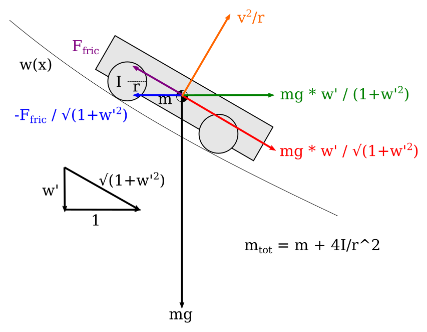

To simulate a car racing down the track, we need to derive the equations of motion of a car. Early on I settled on using Lagrangian mechanics to do this. Lagrangian mechanics has several advantages over the more typical Newtonian mechanics taught in high school physics. In Newtonian mechanics, two cartesian coordinates, x and y, would be needed to describe the position of the car on the track. With Lagrangian mechanics, only one generalized coordinate is needed. Additionally, constraints such as "the car has to follow the path of the track" are accounted for automatically in the definition of the generalized coordinate.
In our case, we'll call the coordinate $x$ and define it as the horizontal distance the car has traveled along the length of the track. This is not the same as the total distance the car has traveled, since the car also moves vertically as it travels down the incline. If we were to use Newtonian mechanics, we would have to carefully identify all forces involved in keeping the car constrained on the track surface, and that could quickly become unwieldy. In Lagrangian mechanics, that's all taken care of. The only thing we need to supply to determine the equations of motion is the potential energy $V$ as a function of $x$, and the kinetic energy $T$ as a function of $\dot{x}$--read "x dot", which means the time-derivative of $x$, or the car's horizontal speed. We'll take care of factoring in the vertical component of the speed later.
Then, a quantity called the Lagrangian is defined as the difference between the kinetic and potential energies:
$$L = T - V$$Then, a fancy calculus equation involving $L$ is solved, and out pop the equations of motion. Since the speed of the car depends on some function of $\dot{x}$, the kinetic energy will be some function of $\dot{x}$. The potential energy $V$ is also some function of $x$. Adding in the rotational effects of the wheels won't be too bad either.
Earlier I discussed how I determined the curvature of the track, and arrived at a neat expression for the height of the track $w$ at cartesian coordinate $x$. However, to keep things as general as possible, and to allow for different models of curvature in the future, I will keep the height of the track $w$ as a function of $x$, but from now on we'll just be calling it $w$. The first and second derivatives of $w$ with respect to $x$ will be $w'$ and $w''$.'
The potential energy $V_{grav}$ due to gravity is given simply by:
$$ V_{grav}(x) = -m g w $$The kinetic energy is $1/2 m v^2$, where $v$ is the speed of the car. Because the car's velocity has a vertical component, this is not exactly the same as $\dot{x}$, which only represents the horizontal component. But we can use the slope of the track, $w'$, to obtain $v$ from $\dot{x}$:
$$ v = \dot{x} \sqrt{1 + w'^2} $$The kinetic energy of the car is then:
$$ T_{lin}(x,\dot{x}) = \frac{1}{2} m \dot{x}^2 \left( 1 + w'^2 \right) $$The $lin$ is for linear. The kinetic energy will also include a term for the rotational energy of the wheels. That term will take the same form as the above expression for $T_{lin}$, but with $m$ replaced by $\frac{4I}{r^2}$, where $I$ is the moment of inertia of one wheel and $r$ is its radius. (Do you know where the 4 comes from?)
$$ T_{rot}(x,\dot{x}) = \frac{1}{2} \frac{4I}{r^2} \dot{x}^2 \left( 1 + w'^2 \right) $$We would also like to be able to include a conservative (constant) friction force which, like gravity, will be accounted for in the potential energy $V(x)$. Since this force always acts in the direction opposite that of motion, its contribution to the potential energy can be determined by integrating the product of the magnitude of the force and the distance traveled by the car along the track. We won't have to evaluate this integral directly. And to further simplify things later on, we'll be assuming $F_{fric}$ is constant within a single simulation timestep, and so in some places where we take derivatives, the $F_{fric}$ term will drop out.
$$ V_{fric}(x,\dot{x}) = \int F_{fric}(x,\dot{x}) \sqrt{ 1 + w'^2 } dx $$Now that we have expressions for $T$ and $V$, and recalling the defintion $L = T - V$, we can extract the equations of motion by solving this differential equation:
$$ \frac{ \mathrm{d} }{ \mathrm{d}t } \left( \frac{ \partial L }{ \partial \dot{x} } \right) = \frac{ \partial L }{ \partial x } $$The first step is to evaluate the partial derivatives of $L$ with respect to $x$ and $\dot{x}$. The entire expression for $L$ is
$$ \begin{align} \\ L & = T - V \\ & = T_{lin}(x,\dot{x}) + T_{rot}(x,\dot{x}) - V_{grav}(x) - V_{fric}(x,\dot{x}) \\ & = \frac{1}{2} \left(m + \frac{4I}{r^2}\right) \dot{x}^2 \left( 1 + w'^2 \right) - \left(-m g w \right) - \int F_{fric}(x,\dot{x}) \sqrt{ 1 + w'^2 } dx \end{align} $$And so the partial derivatives are:
$$ \frac{ \partial L }{ \partial \dot{x} } = \left(m + \frac{4I}{r^2}\right) \dot{x} \left[ 1 + w'^2 \right] $$ $$ \frac{ \partial L }{ \partial x } = \frac{1}{2} \left(m + \frac{4I}{r^2}\right) \dot{x}^2 \left( 2 w' w'' \right) + m g w' - F_{fric}(x,\dot{x}) \sqrt{1+w'^2} $$Now we need to take the time derivative of $\frac{\partial L}{\partial \dot{x} }$:
$$ \frac{ \mathrm{d} }{ \mathrm{d}t } \left( \frac{ \partial L }{ \partial \dot{x} } \right) = \left(m + \frac{4I}{r^2}\right) \left[ \ddot{x} \left(1+w'^2\right) + \dot{x}^2 \left(2 w' w'' \right) \right] $$We now have everything we need to determine the equations of motion. Recall the differential equation above:
$$ \frac{ \mathrm{d} }{ \mathrm{d}t } \left( \frac{ \partial L }{ \partial \dot{x} } \right) = \frac{ \partial L }{ \partial x } $$And now, we substitute the expressions we determined above and solve for $\ddot{x}$:
$$ \left(m + \frac{4I}{r^2}\right) \left[ \ddot{x} \left(1+w'^2\right) + \dot{x}^2 \left(2 w' w'' \right) \right] = \frac{1}{2} \left(m + \frac{4I}{r^2}\right) \dot{x}^2 \left( 2 w' w'' \right) + m g w' - F_{fric}(x,\dot{x}) \sqrt{1+w'^2} $$It's interesting that $\dot{x}$ appears in the final term. Apart from friction, the acceleration should primarily depend on the position of the car, not its velocity. Where does that term come from?
Let's try the Newtonian mechanics approach and see how it compares. Below we've drawn a diagram of a pinewood derby car.

A free body diagram of a pinewood derby car, showing how the forces of gravity, friction, and the track surface combine.
The car has mass $m$. The four wheels each have moment of inertia $I$, and radius $r$. The car moves along a path defined by $w(x)$. For simplicity we'll ignore the moment of inertia of the car itself, which is probably okay since the rotational speed of the car body is slow and doesn't rotate for a long period of time during a race.
Most free body diagrams include things like angles and cosines and other trig functions in order to resolve vector components. This is totally unnecessary. In the lower left, we've included a small triangle. The width of the triangle is $1$, the height is the slope of the track $w'$, and the hypotenuse is the arc length of the track, $\sqrt{1+w'^2}$. We'll use the properties of similar triangles to resolve all vector components.
There are many forces that act on the car. The first we will consider is gravity. It is represented by the black vector pointing straight down, of length $mg$. The component of this vector parallel to the track is what really matters, so by similar triangles, we've drawn a red vector of length $mg \frac{w'}{\sqrt{1+w'^2}}$. Finally, the component of this vector in the x-direction is shown by the green vector, of length: $$mg \frac{w'}{1+w'^2}$$
Friction acts parallel to the track surface and is shown by the purple vector. We'll use the similar triangle trick again to resolve its x-component, shown by the blue vector:
$$\frac{-F_{fric}}{\sqrt{1+w'^2}}$$As the car moves along curved portions of the track, the track exerts a force on the car normal to its surface, separate from gravity and friction, which we've already accounted for. The resulting acceleration due to this force is $v^2/R$, where $v$ is the speed of the car and $R$ is the radius of curvature of the track. The radius of curvature of our track is given by:
$$R = \frac{\left( 1+w'^2 \right)^{3/2}}{w''}$$And so the magnitude of the acceleration due to the normal force is:
$$ N = \frac{v^2}{R} = \left(\dot{x} \sqrt{1+w'^2}\right)^2 \frac{w''}{\left( 1+w'^2 \right)^{3/2}} = \dot{x}^2 \frac{w''}{\sqrt{1+w'^2}} $$Then we use our trick with similar triangles to get the component of that acceleration in the x-direction:
$$ N_x = \dot{x}^2 \frac{w''}{\sqrt{1+w'^2}} \frac{w'}{\sqrt{1+w'^2}} = \dot{x}^2 \frac{w' w''}{1+w'^2}$$Finally, we combine the mass of the car and the moments of inertia of the wheels to create an effective, or total, mass, $m_{tot} = m + 4I/r^2$. We divide forces acting on the car by this total mass (the acceleration due to the normal force already takes this into account). When we add everything up, we get this:
This is identical to the acceleration we obtained using Lagrangian mechanics. Now we know the origin of the mysterious final term that contains $\dot{x}$: it arises from the normal force, because curved portions of the track exert a force on the car. If this term were not present, the car would accelerate down the starting section of the track, and then unnaturally slow down when the track curved to the horizontal. Maybe if we had used arc-length instead of x-coordinate as the independent variable, this normal force wouldn't matter. But then the algebra would have been much more difficult.
The Newtonian method gave us the same result as the Lagrangian, but we had to consider ALL forces acting on the car, AND resolve their components correctly. It is very easy to make mistakes. In fact, there are additional forces I didn't show in the free-body diagram, and I've been sloppy with keeping track of my signs, but the comparison with the result from Lagrangian mechanics is still informative.
The biggest advantage of using Lagrangian instead of Newtonian mechanics is that you need only be able to evaluate the energy of the system, then all the forces that act on the system will appear once you do the derivatives. Another advantage is that we can choose whichever independent variable we want, and everything will work out.